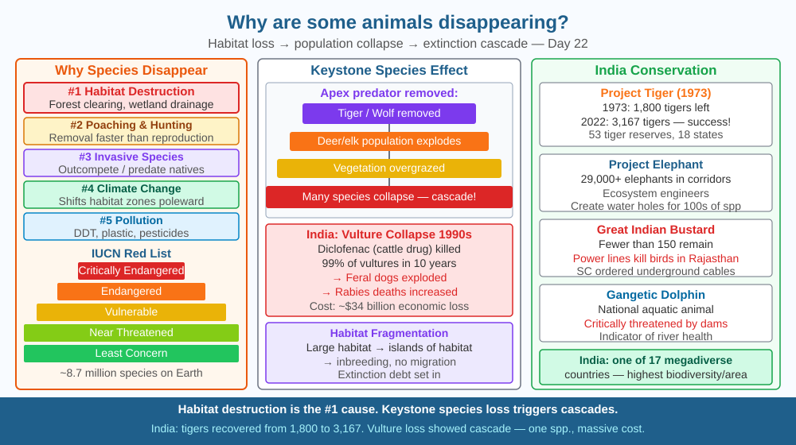

By the end of this lesson, you should be able to explain why habitat destruction is the leading cause of species extinction, describe what a keystone species is, and predict what happens when one disappears.
Earth currently has around 8.7 million species. Scientists estimate we are losing between 1,000 and 10,000 times the natural background extinction rate. The dodo is famous — but it went extinct in 1681. Today, species disappear far faster. Why? And why does it matter if a bat or a frog goes extinct?
Habitat destruction is the #1 driver. Every species evolved to survive in a specific habitat — a range of temperature, humidity, food sources, and shelter. When forests are cleared, wetlands drained, or grasslands converted to farmland, species lose the living space and food they depend on. Fragmentation (cutting habitat into isolated patches) prevents migration, creates inbreeding, and prevents recolonisation after local disasters.
Other drivers: - Poaching and hunting: direct removal of individuals faster than the population can reproduce - Invasive species: introduced species outcompete or predate native ones (rats on islands killed ground-nesting birds) - Climate change: shifts species' required temperature zones poleward or uphill — mountain-top species have nowhere to go - Pollution: pesticides (DDT thinned eagle eggs), plastic ingested by turtles and seabirds
Keystone species: A keystone species has an outsized effect on its ecosystem — removing it causes a cascade of losses. Sea otters eat sea urchins; without otters, urchins multiply and eat all the kelp, destroying the habitat for hundreds of other species. Tigers in India regulate deer populations, which prevents overgrazing of forests.
IUCN Red List categories: Least Concern → Near Threatened → Vulnerable → Endangered → Critically Endangered → Extinct in the Wild → Extinct.
Think of an ecosystem as a stone arch bridge. Every species is a stone in that arch. Most stones can be removed and the bridge holds — other stones take the weight. But the keystone at the very top of the arch is the one stone that locks all others in place. Remove it and the arch collapses, even though it is just one stone among many.
Apply this step by step: 1. A habitat exists — forest, wetland, grassland — shaped over thousands of years so species fill every role (pollinator, seed disperser, predator, scavenger). 2. Habitat shrinks or fragments — the arch loses stones. Smaller patches cannot support full populations; random floods or disease wipe out local groups with no immigrants to replace them. 3. A keystone species disappears — its absence removes the check on one or two other species that now overshoot. Their excess consumption degrades the habitat further. 4. Extinction debt accumulates — species already doomed by the habitat loss still appear alive today, but their populations are too small to sustain long-term. The collapse is already locked in, just delayed.
The critical insight: extinction is not usually a single dramatic event. It is a slow erosion of conditions, followed by a sudden crash when the last redundancy is gone.
The SVG for this lesson shows a forest ecosystem arranged as a vertical food web with five labeled layers. At the base, green boxes represent grass and shrubs (producers). Above them, grey boxes show deer and rabbits (primary consumers) connected by arrows from the plants. The third layer has a fox and a eagle (secondary consumers) with arrows from herbivores to them. A tiger occupies the apex (tertiary consumer/keystone) with a bold red border to signal its disproportionate role. Off to the right, a dashed red arrow labeled "Habitat loss" points toward a fragment of forest getting progressively smaller across three panels, illustrating fragmentation. A separate inset box shows the IUCN scale as a colour-gradient bar from green (Least Concern) through amber (Vulnerable) to deep red (Extinct). The overall layout makes clear that removing the top predator does not just remove one box — the arrows below it all change direction or disappear.

India is one of 17 megadiverse countries (highest biodiversity per area). India has: - Project Tiger (1973): Tiger population recovered from 1,827 (2014) to 3,167 (2022). - Project Elephant: 29,000+ elephants in protected corridors. - Gangetic River Dolphin (Platanista gangetica): India's national aquatic animal, critically threatened by river pollution and dams. - Great Indian Bustard: Fewer than 150 remain — wind turbines and power lines in Rajasthan are a leading cause of death. The Supreme Court ordered underground cables in their habitat. - Vulture collapse: 99 % of Indian vultures died in the 1990s because they ate carcasses of cattle treated with diclofenac. Vultures are scavengers — their loss increased disease spread. One keystone species, massive consequences.
Local biodiversity walk: Walk around your school or neighbourhood for 15 minutes. List every type of bird, insect, plant, and animal you see. Then ask: why are there more sparrows than eagles? Why are there more pigeons in cities than peacocks? The answers involve food availability, shelter, tolerance to humans, and competition. You are doing field ecology — the same skill used by conservation biologists.
Back in class, rank the species you spotted by how much the rest of the list might depend on them. Which one is the keystone of your local patch? Justify your choice with one specific feeding or habitat link.
The concept of "extinction debt" describes a grim reality: when a habitat shrinks below a certain size, the species living in it are doomed to extinction even if the remaining patch is protected today. Their populations are too small to sustain genetic diversity or survive random events (a disease, a flood). Scientists estimate that species already in "extinction debt" from historical deforestation are still dying off — a wave of future extinctions we have already locked in. This makes restoring habitat connectivity (wildlife corridors) as important as protecting what remains.
Predict: India's Western Ghats lost more than 30 % of its forest cover in the last century. Even if all remaining forest is now protected, how many species might still be lost in the next 50 years because of extinction debt already accumulated? What one intervention — corridor creation, captive breeding, or invasive species removal — would reduce that debt most efficiently, and why?
What is the leading cause of animal species becoming endangered today?
Correct answer: B
Why is understanding extinction mechanisms more useful than listing endangered species?
Correct answer: B
If a keystone species disappeared from an ecosystem, what would you predict?
Correct answer: A
A river wetland in central India supports the following species: painted stork, freshwater crocodile, mahseer fish, water hyacinth (invasive plant), otters, and frogs. A dam is proposed that will reduce the river's flood pulse by 70 %, drying out 60 % of the wetland for eight months of the year.
Working through the food links, predict the order in which species will decline. Identify which single species in this list functions as a keystone (justify your choice). Then propose one engineering modification to the dam — not removal of the dam — that could reduce the extinction risk by preserving at least part of the flood pulse. Explain your modification using what you know about habitat requirements and population thresholds.
The passenger pigeon was once the most numerous bird in North America — flocks of billions darkened the sky for hours as they flew overhead. By 1914, every last one was dead, and the final individual (named Martha) died in a Cincinnati zoo. The collapse was not just from hunting; it was because the species needed enormous colony sizes to breed successfully — below a threshold, individuals stopped nesting even when food was plentiful. This is called the Allee effect: populations can fall below a minimum viable size and then crash to zero even without further hunting or habitat loss. The lesson is that a species can look abundant right up until the moment it vanishes.
Habitat destruction eliminates the specific conditions each species evolved to need — and removing a keystone species triggers a cascade that can collapse an entire ecosystem, far beyond the single species lost.